Lab Alumni
Graduate Students
- NameYearsAfter the labCurrent position
 Benjamin Orr2020–2025Director of Computational Biology and AI, Animate Biosciences
Benjamin Orr2020–2025Director of Computational Biology and AI, Animate Biosciences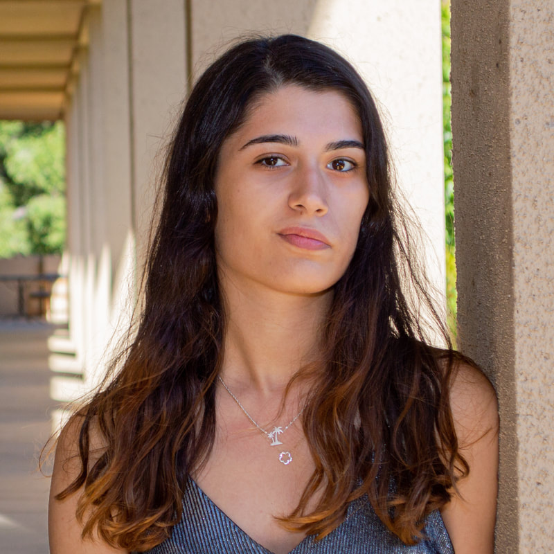
Deniz Akpinaroglu2020–2025ML Scientist, Generate Biosciences Amy Guo2019–2025Senior ML Scientist, Genentech
Amy Guo2019–2025Senior ML Scientist, Genentech Connor Galvin2019–2025Adjunct Professor, University of San Francisco
Connor Galvin2019–2025Adjunct Professor, University of San Francisco Chris Mathy2017–2022Postdoc, Stanford
Chris Mathy2017–2022Postdoc, Stanford Cody Krivacic2017–2022Principal Scientist, Evercrisp Biosciences
Cody Krivacic2017–2022Principal Scientist, Evercrisp Biosciences James Lucas2016–2020Protein Design Scientist, Nautilus BiotechnologyAssociate Director, Generate Biomedicines, Inc.
James Lucas2016–2020Protein Design Scientist, Nautilus BiotechnologyAssociate Director, Generate Biomedicines, Inc.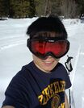
XingJie Pan2015–2020Postdoc, Harvard Samuel Thompson2014–2020Postdoc, Stanford and University of Washington
Samuel Thompson2014–2020Postdoc, Stanford and University of Washington Amanda Loshbaugh2013–2019Scientist, Lyell ImmunopharmaSenior Scientist, Systimmune
Amanda Loshbaugh2013–2019Scientist, Lyell ImmunopharmaSenior Scientist, Systimmune Kale Kundert2012–2019Postdoc, Harvard
Kale Kundert2012–2019Postdoc, Harvard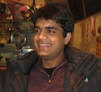
Pradeep Bandaru2013–2017Postdoc, StanfordData Scientist, Palantir Technologies Kyle Barlow2012–2017Scientist, Adimab, LLCSenior Scientist, Adimab
Kyle Barlow2012–2017Scientist, Adimab, LLCSenior Scientist, Adimab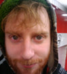
Laurens Kraal2010–2016Director, uBiomeHead of Product, DeepX Health Noah Ollikainen2008–2015ACS Postdoctoral Fellow, CalTechStaff Scientist, National Institute on Aging
Noah Ollikainen2008–2015ACS Postdoctoral Fellow, CalTechStaff Scientist, National Institute on Aging Ryan Ritterson2007–2015Intern, Gryphon Scientific LLCSpecialist Lead, Deloitte Consulting
Ryan Ritterson2007–2015Intern, Gryphon Scientific LLCSpecialist Lead, Deloitte Consulting Colin Smith2006–2011Humboldt Postdoctoral Fellow, Max Planck InstituteAssociate Professor, Wesleyan University
Colin Smith2006–2011Humboldt Postdoctoral Fellow, Max Planck InstituteAssociate Professor, Wesleyan University Rich Oberdorf2006–2011Consultant, Ab Initio Software CorporationSoftware Developer, Ab Initio Software Corporation
Rich Oberdorf2006–2011Consultant, Ab Initio Software CorporationSoftware Developer, Ab Initio Software Corporation Dan Mandell2005–2011LSRF Postdoctoral Fellowship, Harvard UniversityCo-founder and CEO, GRO Biosciences
Dan Mandell2005–2011LSRF Postdoctoral Fellowship, Harvard UniversityCo-founder and CEO, GRO Biosciences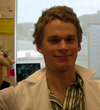
Matt Eames2005–2011Postdoc, NYUWriter and Director, Consultant Cognition IP, Multimedia Producer Northeastern University Elizabeth Humphris2005–2009NIH N32 Postdoctoral Fellow, YaleAssociate Director, Orna Therapeutics
Elizabeth Humphris2005–2009NIH N32 Postdoctoral Fellow, YaleAssociate Director, Orna Therapeutics Greg Friedland2004–2008Postdoc, UC Berkeley/LBNL
Greg Friedland2004–2008Postdoc, UC Berkeley/LBNL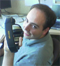
David Lomelin2004–2006BMI graduate program, UCSFDistinguished Engineer, Capital One
Postdoctoral Scholars
- NameYearsAfter the labCurrent position
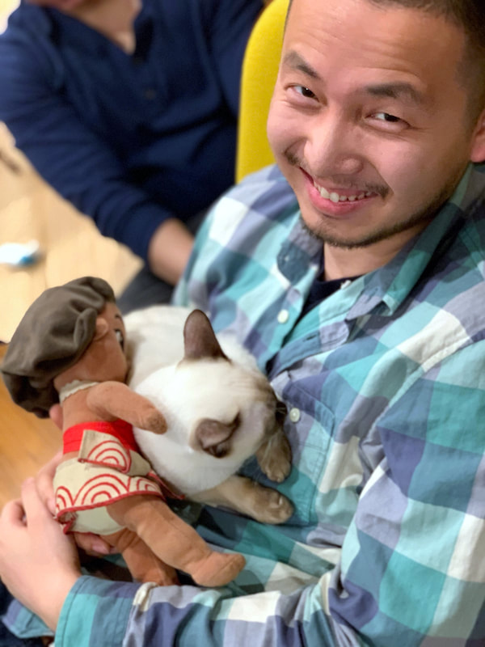
Lu Hong2019–2023Senior Research Scientist, AbCellera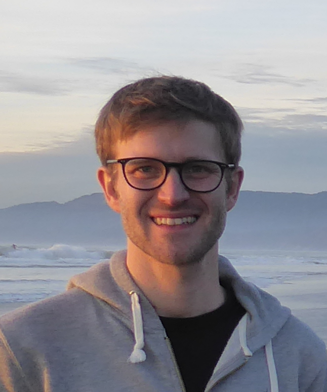
Simon Kretschmer2019–2023Scientist II, Altos Labs Robert Alberstein2020–2022Principal ML Scientist, Prescient Design, Genentech
Robert Alberstein2020–2022Principal ML Scientist, Prescient Design, Genentech Benjamin Jagger2020–2021Associate Principal Scientist, Merck
Benjamin Jagger2020–2021Associate Principal Scientist, Merck Anum Azam Glasgow2017–2021Assistant Professor, Columbia University Medical Center
Anum Azam Glasgow2017–2021Assistant Professor, Columbia University Medical Center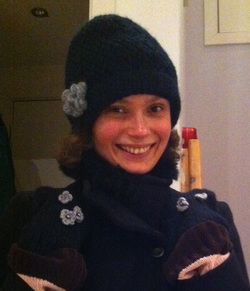
Tina Perica2014–2021Assistant Professor, University of Zurich, Switzerland Yao-ming Huang2011–2016Director, Protein Engineering, TCG Labs Soleil
Yao-ming Huang2011–2016Director, Protein Engineering, TCG Labs Soleil Amelie Stein2011–2015Associate Professor, University of Copenhagen, Denmark
Amelie Stein2011–2015Associate Professor, University of Copenhagen, Denmark Lin Liu2011–2015Senior Scientist, Remegen
Lin Liu2011–2015Senior Scientist, Remegen Roland Pache2011–2015Scientist, Novozymes, Denmark
Roland Pache2011–2015Scientist, Novozymes, Denmark Daniel Hoersch2010–2015Fellow, Free University Berlin, Germany
Daniel Hoersch2010–2015Fellow, Free University Berlin, Germany Eyal Akiva2010–2011VP Computational Biology, Lembas
Eyal Akiva2010–2011VP Computational Biology, Lembas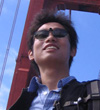
Sen Liu2008–2010Professor, Hubei University of Technology (HUBT), China Mariana Babor2006–2009Senior Manager, DarwinHealth
Mariana Babor2006–2009Senior Manager, DarwinHealth Greg Kapp2004–2009Director of Protein Sciences, Motley Bio
Greg Kapp2004–2009Director of Protein Sciences, Motley Bio- Lauren Baugh2004–2005Senior Scientific Writer, University of Washington
Staff
- NameYearsAfter the labCurrent position
 Yang (Sunny) Zhang2017–2021Senior Protein Scientist, BigHat Bio
Yang (Sunny) Zhang2017–2021Senior Protein Scientist, BigHat Bio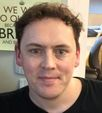
Shane O'Connor2011–2016Software Engineer, Kitman Labs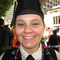
Joslyn Polzien2012–2015Finance Manager, UCSF Debbie Jeon2009–2013MD Program, George Washington University
Debbie Jeon2009–2013MD Program, George Washington University- Ashley Custer2010–2012Graduate program, Boston University
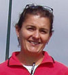
Cristina Melero2004–2012 Florian Lauck2008–2010Software Engineer, Evotec
Florian Lauck2008–2010Software Engineer, Evotec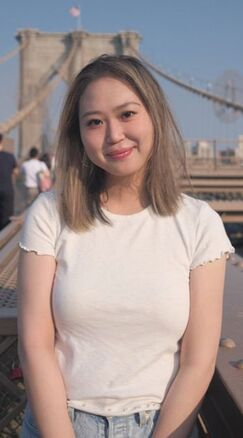
Eleanor Zhu
Undergraduate Researchers
- NameYearsAfter the labCurrent position
- Haley Slosberg2022Clinical Research Coordinator, NY
- Alejandra Del Castillo Valerio2021Undergraduate, Georgia Institute of Technology
- Hyery Yoo2021Undergraduate, Amherst College
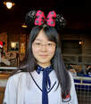
Muziyue Wu2018–2020Graduate Student, Weiner Lab UCSF- Zion Perry2019Graduate Student, Yale
- Shivani Mathur2016–2018Undergraduate, UC Berkeley
- Emily Hinds2017Graduate Student, University of Chicago
- Eder Davila Contreras2015Undergraduate, University of Kansas
- Victor Ruiz2012Pharmacology Graduate Program, Yale
- Aaron Nichols2010Undergraduate, UC Riverside
- Thomas Bliska2010Undergraduate, Williams College
- Michael Michalik2009–2010Graduate Program, University of Bonn, Germany
- Matt Chroust2009Dentistry Graduate Program, UCSF
- Catherine Shi2008IPQB graduate program, UCSF
- Anthony Linares2006–2007MD/PhD program, UCLA
High School Students
- NameYearsAfter the labCurrent position
- Kianna Zucker2017The College Preparatory School, Oakland
- Flora Yi2009El Camino High School, San Francisco
Past Rotation Students
- Angel Arada, Biophysics, Winter 2023
- Stephanie Ouchida, CCB, Winter 2022
- Nick Perry, Bioengineering, Spring 2021
- Rian Kormos, Biophysics, Winter 2021
- Hailey Wallace, Biophysics, Winter 2021
- Laura Shub, BMI, Spring 2020
- Gabby Rabadam, Bioengineering, Winter 2020
- Wilson Nieves Vasquez, Biophysics, Fall 2019
- Sita Chandrasekaran, Bioengineering, Summer 2019
- Maru Jaime Garza, Biophysics, Winter 2019
- Christina Stephens, Biophysics, Winter 2019
- Nick Hoppe, Biophysics, Fall 2018
- Annie Maslan, Bioengineering, Winter 2018
- Jenna Pellegrino, Biophysics, Winter 2018
- Erik Navarro, Biophysics, Fall 2017
- Yessica Gomez, Biophysics, Fall 2017
- Alison Maxwell, CCB, Spring 2017
- Zeynip Ali, Bioengineering, Winter 2017
- Allison Su, Bioengineering, Winter 2017
- Gabe Reder, Biophysics, Fall 2016
- Andrew Natale, Biophysics, Fall 2016
- Sophia Tan, Biophysics, Summer 2016
- Tianjiao Zhang, Bioengineering, Winter 2016
- Cole Helsell, Biophysics, Fall 2015
- Pooja Suresh, Biophysics, Fall 2015
- Marco Mravic, Biophysics, Winter 2015
- Dominic Tong, Bioengineering, Winter 2015
- Seth Axen, BMI, Fall 2014
- Reid Stein, PSPG, Fall 2014
- Benjamin Adler, Bioengineering, Summer 2014
- Aditya Anand, Tetrad, Summer 2014
- Justin Biel, Biophysics, Winter 2014
- Kevin Hartman, Bioinformatics, Winter 2014
- Rebecca Davidson, Biophysics, Winter 2013
- Russell Goodman, Biophysics, Winter 2012
- Lawrence Uricchio, Bioengineering, Winter 2012
- Leo Gendelev, Biophysics, Summer 2012
- Alec Nielsen, Biophysics, Winter 2011
- David Mavor, Biophysics, Summer 2011
- Joel Karpiak, CCB, Winter 2010
- Geoff Rollins, Biophysics, Winter 2009
- Rocco Varela, BMI, Winter 2009
- Ian Vaughn, Biophysics, Fall 2009
- Elaine Kirshke, Biophysics, Winter 2008
- Charles Kehoe, BMI, Winter 2008
- Roxana Ordonez, BMI, Summer 2008
- Jaline Gerardin, Biophysics, Fall 2007
- Alvin Tamsir, Tetrad, Spring 2007
- Reid Williams, Biophysics, Fall 2006
- Dan Gray, CCB, Fall 2006
- Sheel Dandekar, Biophysics, Spring 2006
- Michael Hicks, PSPG, Winter 2005
- Kareen Riviere, PSPG, Winter 2005
- Chris McClendon, Biophysics, Fall 2005
- Ian Harwood, Biophysics, Spring 2005
- Mike Keiser, BMI, Fall 2004